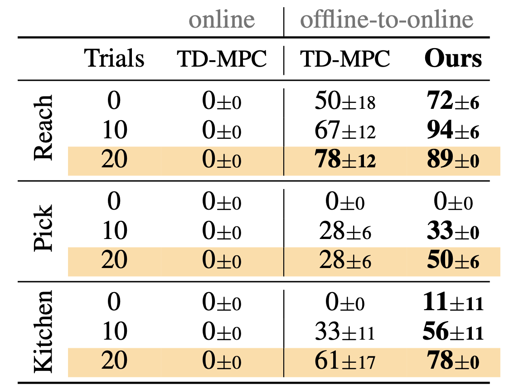

Real-world offline-to-online results. Success rate (%) as a function of online finetuning trials. Mean of 18 trials and 2 seeds.

Reinforcement Learning (RL) is notoriously data-inefficient, which makes training on a real robot difficult. While model-based RL algorithms (world models) improve data-efficiency to some extent, they still require hours or days of interaction to learn skills. Recently, offline RL has been proposed as a framework for training RL policies on pre-existing datasets without any online interaction. However, constraining an algorithm to a fixed dataset induces a state-action distribution shift between training and inference, and limits its applicability to new tasks. In this work, we seek to get the best of both worlds: we consider the problem of pretraining a world model with offline data collected on a real robot, and then finetuning the model on online data collected by planning with the learned model. To mitigate extrapolation errors during online interaction, we propose to regularize the planner at test-time by balancing estimated returns and (epistemic) model uncertainty. We evaluate our method on a variety of visuo-motor control tasks in simulation and on a real robot, and find that our method enables few-shot finetuning to seen and unseen tasks even when offline data is limited.
We consider diverse tasks in simulation (D4RL, xArm, and quadruped locomotion) and on a real xArm robot.

Our method can be finetuned few-shot to unseen task variations by online RL, directly in the real world. We observe a noticable improvement after a handful of trials.
Here we show the footage of online finetuning on the kitchen task, where the goal is to put the pot in the sink. Note the new objects added to the scene (at trial 21 and 27) and how our model adapt fast to the changes.
Reach
Pick
Videos are generated by our method after just 20 trials.
Simulation results. Success rate (xArm) and normalized return (D4RL and Walk) of methods before and after online finetuning. Mean of 5 seeds.

Real-world offline-to-online results. Success rate (%) as a function of online finetuning trials. Mean of 18 trials and 2 seeds.
Finetuning to unseen real-world tasks. Success rate (%) of our method for each task variation. We include 4 successful transfers and 1 failure. Mean of 18 trials and 2 seeds.
Our method significantly improves the performance of offline-to-online finetuning of world models, and achieves high task success rates in both seen and unseen task variations with as little as 20 online trials on a real robot.
@inproceedings{feng2023finetuning,
title={Finetuning Offline World Models in the Real World},
author={Feng, Yunhai and Hansen, Nicklas and Xiong, Ziyan and Rajagopalan, Chandramouli and Wang, Xiaolong},
booktitle={Proceedings of the 7th Conference on Robot Learning (CoRL)},
year={2023}
}